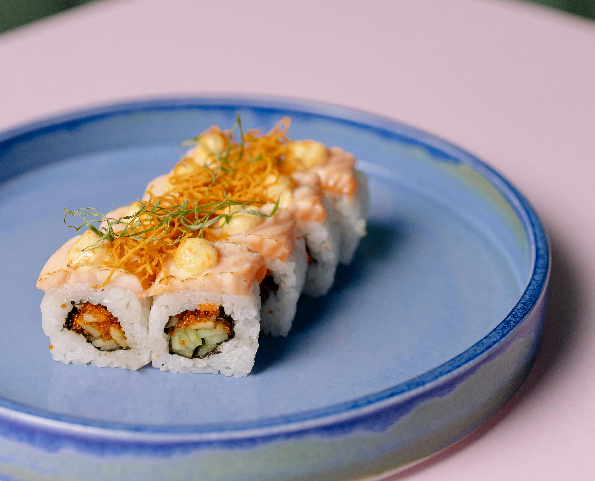
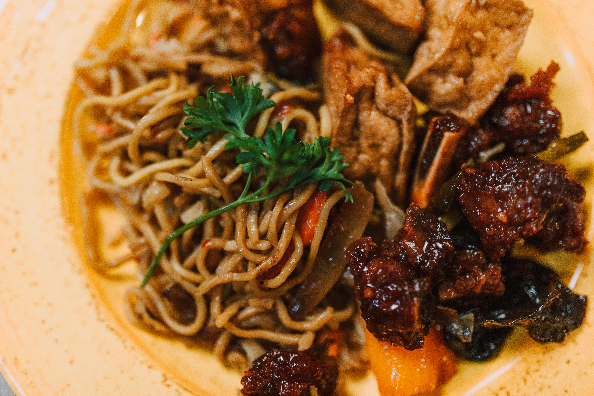
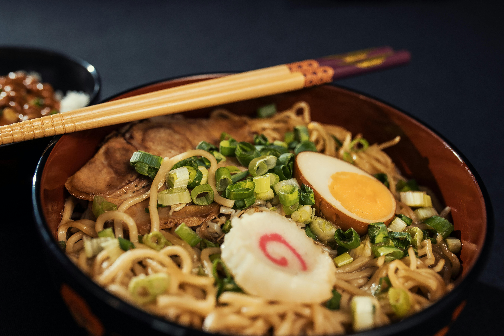
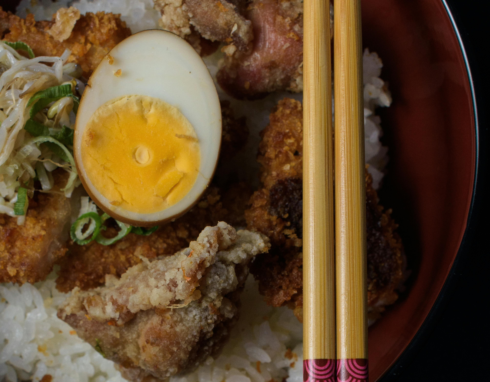
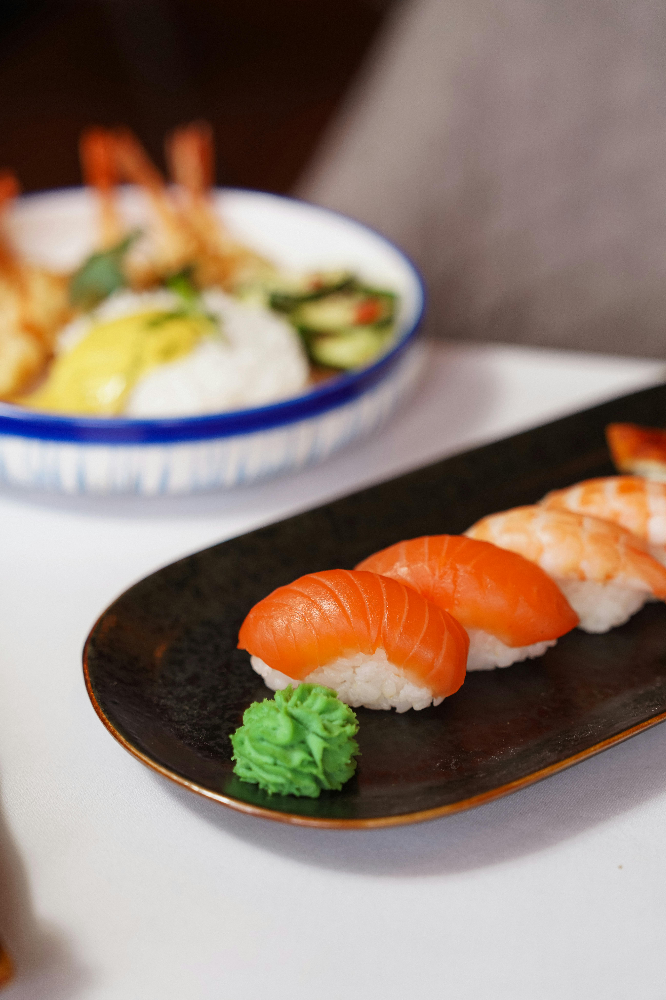
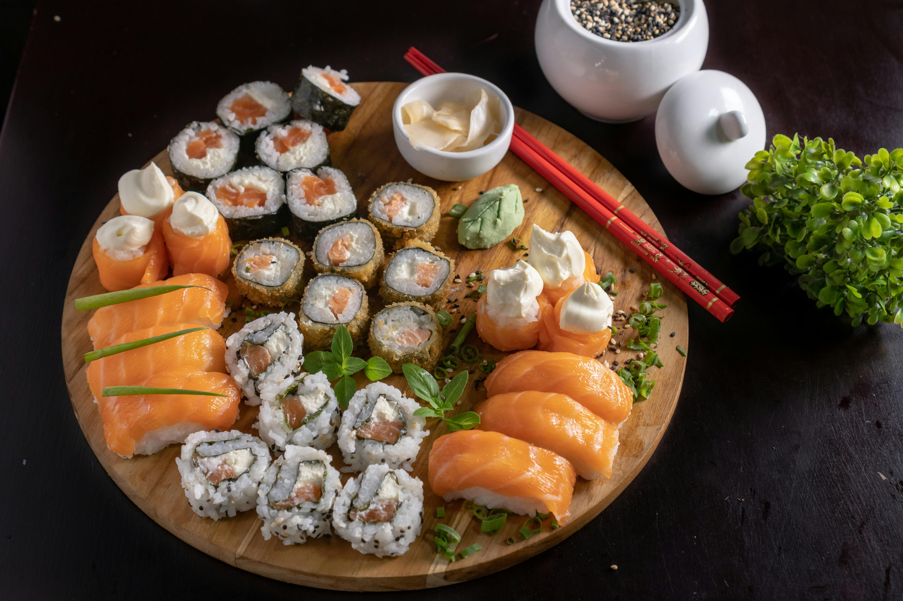

What is Sushi?

Sushi is a traditional Japanese dish that typically consists of vinegared rice, raw fish, and various other ingredients such as vegetables and seaweed. It is often served with soy sauce, wasabi, and pickled ginger.


Sushi is a traditional Japanese dish that typically consists of vinegared rice, raw fish, and various other ingredients such as vegetables and seaweed. It is often served with soy sauce, wasabi, and pickled ginger.

Ramen is a Japanese noodle soup dish that consists of Chinese-style wheat noodles served in a meat or fish-based broth, often flavored with soy sauce or miso, and uses toppings such as sliced pork, nori (dried sea weed), menma (bamboo shoots), and scallions.

Soba is a traditional Japanese dish that typically consists of buckwheat noodles, served either chilled with a dipping sauce or in a hot broth. It is often garnished with green onions, tempura, or seaweed. pickled ginger.

Sushi is a traditional Japanese dish that typically consists of vinegared rice, raw fish, and various other ingredients such as vegetables and seaweed. It is often served with soy sauce, wasabi, and pickled ginger.

Sushi is a traditional Japanese dish that typically consists of vinegared rice, raw fish, and various other ingredients such as vegetables and seaweed. It is often served with soy sauce, wasabi, and pickled ginger.
No items yet